Le contrôle parental de la TV,
depuis votre téléphone.
Temps d'écran par jour, couvre-feu, un profil par enfant, et des règles appli par appli : vous fixez les règles, la TV les applique, même téléphone éteint. Et en bonus, votre téléphone devient la télécommande.

Des règles claires, appliquées par la TV elle-même.
L'appli installée sur la TV surveille le temps passé et applique vos règles. Quand l'enfant veut plus de temps, c'est vous qui décidez, depuis votre téléphone.
Appli par appli, des règles sur mesure
Chaque appli de la TV a ses propres règles, en plus du temps total. Vous choisissez pour chacune :
- Une limite par jour : 45 min de YouTube, 1 h de Netflix…
- Des jours autorisés : Disney+ seulement le week-end.
- Des horaires : de 14 h à 18 h, pas avant l'école ni après le dîner.
- Un blocage complet : Twitch interdite, sans possibilité de demander.
- Aucune règle pour les applis éducatives : france.tv reste libre.
Le temps se compte par enfant : avec deux profils, chacun a ses 45 min de YouTube. Le profil Parents n'a aucune limite.
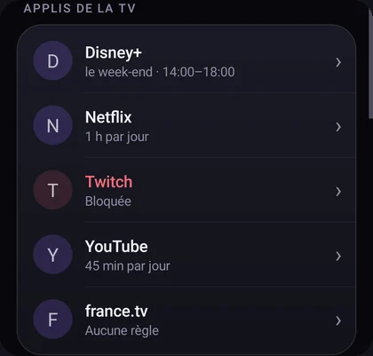
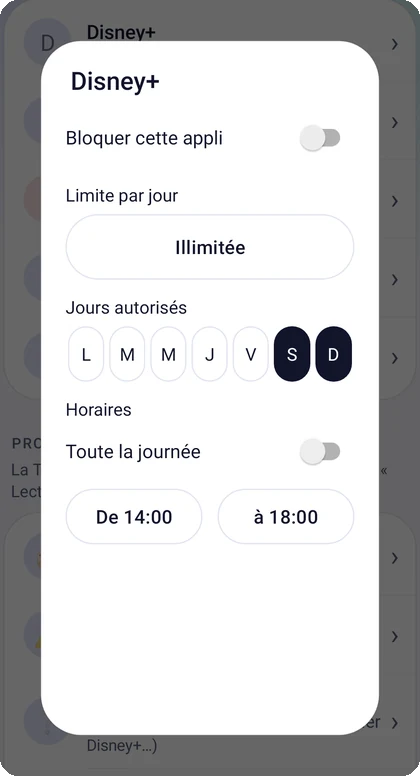
Comment se passe une demande de temps
Pensé pour éviter les crises
- Prévenu avant la coupure : un bandeau et un petit sablier 5 minutes avant la fin du temps, du couvre-feu ou d'une plage horaire.
- Fin d'épisode : la TV laisse finir la vidéo en cours (10 minutes au plus) avant de couper.
- Une seule réponse suffit : quand vous accordez du temps, la TV lève tout ce qui bloquait. « +30 min », ce sont vraiment 30 minutes.
- C'est la TV qui dit non, pas vous : l'enfant peut demander poliment, vous répondez depuis votre téléphone.

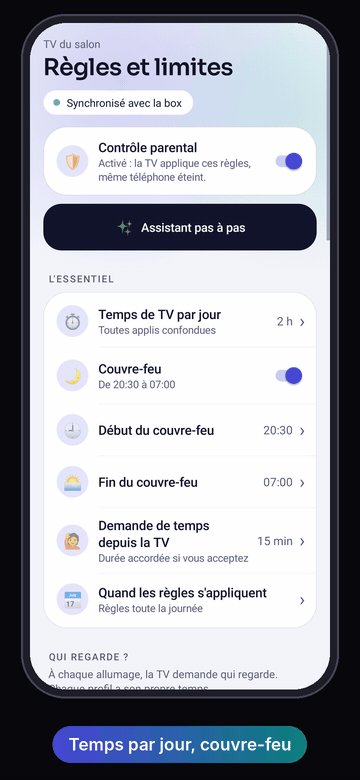

Et sur la TV, des écrans clairs pour les enfants

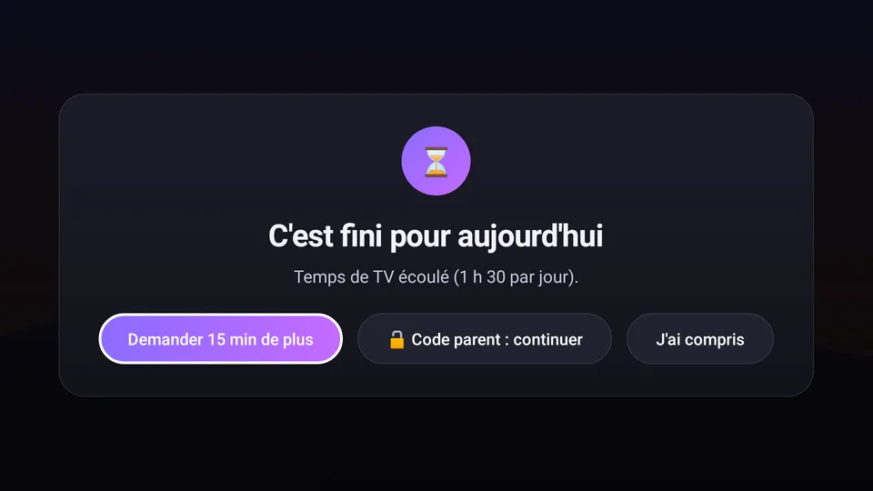


En bonus : plus besoin de chercher la télécommande sous le canapé.
- Un grand pavé tactile : on glisse pour se déplacer, on touche pour valider.
- Double-toucher à gauche ou à droite pour reculer ou avancer de 10 secondes.
- Volume, chaînes, accueil, retour, lecture : tout est à portée de pouce.
- Le clavier du téléphone pour taper une recherche, au lieu de la lettre par lettre.
- Ce qui passe à l'écran s'affiche en haut, avec des raccourcis adaptés.
Pensée pour les box Android TV et Google TV (testée sur Freebox Pop). Elle sait aussi piloter de nombreuses TV : Samsung, LG, Sony, Philips, Panasonic, Roku, Kodi, et les télécommandes infrarouges des téléphones qui en ont.
Vos données ne quittent pas la maison.
Aucun serveur, aucun compte
Le téléphone et la TV se parlent directement, sur le Wi-Fi de la maison. Il n'y a pas de cloud, pas d'inscription, pas de publicité.
Tout est chiffré
Les échanges sont chiffrés et liés à vos deux appareils. Le code parent n'est jamais envoyé, et les réglages sont chiffrés sur la TV.
Un code parent bien gardé
Validé par votre empreinte, jamais par le code du téléphone. Une empreinte ajoutée en douce n'est pas acceptée. Après 5 codes faux, la TV comme le téléphone imposent une pause à l'enfant ; votre empreinte la lève aussitôt. Les Paramètres de la TV sont protégés.
Open source
Le code est public sous licence GPL-3.0 : tout le monde peut vérifier ce que fait l'appli, et l'améliorer.
Le téléphone installe l'appli sur la TV, avec vous.
Vous installez l'appli sur votre téléphone, puis un assistant vous guide pour la TV. Il ouvre les bons écrans sur la TV, lui envoie l'appli, et coche chaque étape tout seul dès qu'il la voit faite. Rien ne part vers la TV sans un appui de votre part.
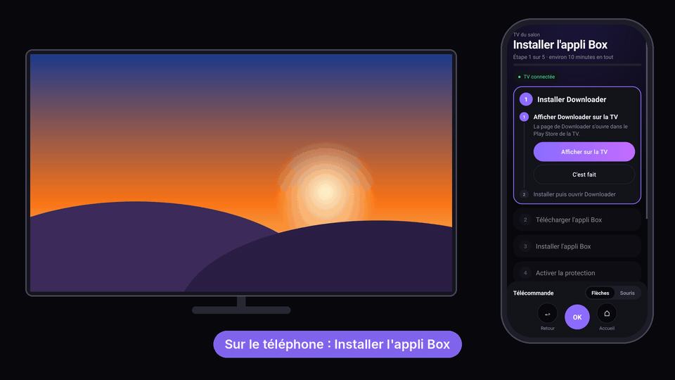
D'abord : l'appli sur le téléphone
Téléchargez-la ci-dessous et autorisez l'installation depuis le navigateur (Android 5 et plus). À l'ouverture, elle trouve la TV sur le Wi-Fi.
La première fois, la TV affiche un code à 6 caractères : tapez-le sur le téléphone. C'est ce qui permet au téléphone de servir de télécommande.
Ensuite : onglet Temps d'écran › Installer l'appli Box sur la TV. L'assistant s'ouvre et vous guide en 5 étapes :
Télécharger l'appli téléphoneRaccourci à taper dans le navigateur du téléphone :
telecommande-box.netlify.app/tInstaller Downloader
Appuyez sur Afficher sur la TV : la page de Downloader s'ouvre dans le Play Store de la TV. Avec la télécommande en bas de l'assistant, choisissez Installer, puis Ouvrir.
✓ La case se coche dès que Downloader est ouvert.
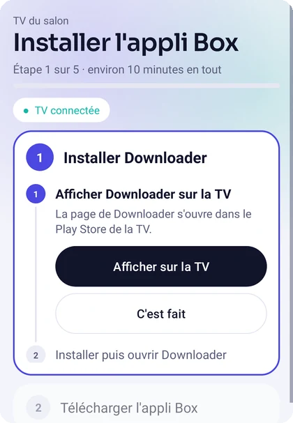
Télécharger l'appli Box
Appuyez sur Envoyer à la TV : Downloader reçoit l'adresse et télécharge l'appli depuis votre téléphone, par le Wi-Fi de la maison. Rien à taper. Si Downloader affiche une page, cliquez sur Download.
✓ L'assistant voit le fichier partir et arriver sur la TV.
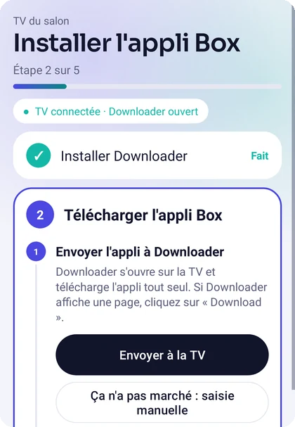
Installer, puis ouvrir
La TV propose d'installer l'appli. Si elle demande d'abord une autorisation, ouvrez Paramètres, activez Downloader, puis faites Retour. Choisissez ensuite Installer, puis Ouvrir.
✓ La case se coche dès que l'appli est ouverte sur la TV.
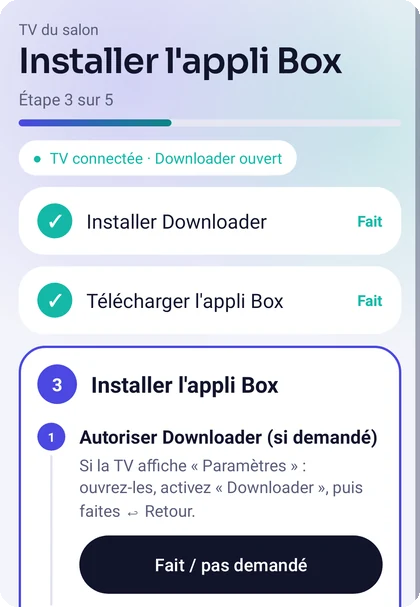
Activer la protection
Sur la TV, l'appli affiche Activez la protection. Choisissez Activer, puis Télécommande Box, et activez-la. C'est l'option d'accessibilité qui permet à la TV de savoir quelle appli est ouverte et d'afficher l'écran « Temps écoulé ».
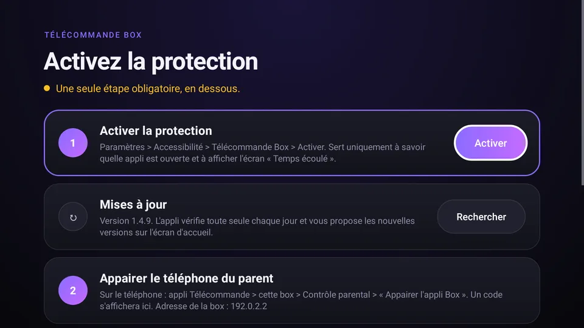
✓ L'assistant voit la protection démarrer sur la TV.
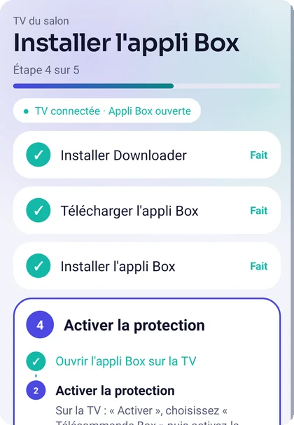
Relier au téléphone
Appuyez sur Relier. Si vous n'avez pas encore de code parent, le téléphone vous en fait choisir un : c'est lui qui protège les réglages. La TV affiche alors un code à 6 chiffres : tapez-le sur le téléphone.
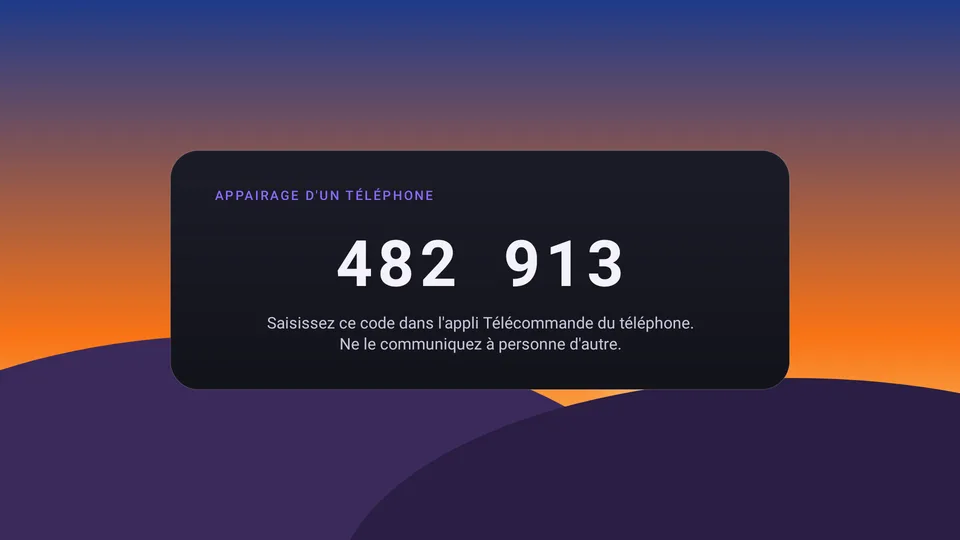
✓ C'est fini : le tableau de bord s'ouvre sur le téléphone.
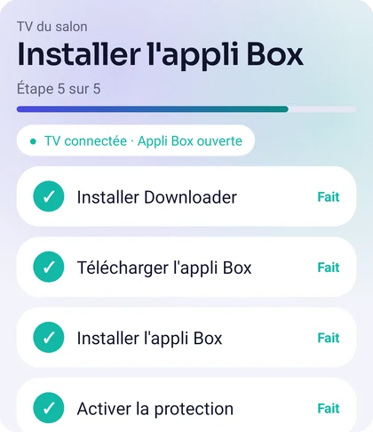
Ensuite
Réglez le temps par jour, le couvre-feu et les profils depuis le tableau de bord. Les deux applis vérifient chaque jour s'il existe une nouvelle version, contrôlent son empreinte, et vous proposent de l'installer.
Si ça bloque
« Connexion à la TV… » reste affiché
Vérifiez que la TV est allumée et que le téléphone est sur le même Wi-Fi qu'elle (pas en 4G, pas sur un Wi-Fi invité).
L'envoi à Downloader ne fait rien
Appuyez sur Ça n'a pas marché : saisie manuelle. L'assistant vous fait cliquer sur la barre d'adresse de Downloader, puis il y colle l'adresse lui-même. S'il n'y arrive pas, il la tape touche par touche. Vous n'avez toujours rien à taper.
Une case ne se coche pas alors que c'est fait
Chaque ligne a un bouton (« C'est fait », « Downloader est ouvert »…) pour passer à la suite.
Toujours bloqué
En bas de l'assistant, Ou envoyer le journal de diagnostic : joignez-le à un ticket sur GitHub. Le texte tapé au clavier n'y figure jamais.
Installer sans l'assistant (à la main sur la TV)
- Installez Downloader depuis le Play Store de la TV.
- Ouvrez Downloader et tapez l'adresse :
telecommande-box.netlify.app/b - Autorisez l'installation si la TV le demande, puis Installer › Ouvrir.
- Activez l'option : Paramètres › Accessibilité › Télécommande Box.
- Sur le téléphone : Temps d'écran › Déjà installée : appairer, puis tapez le code affiché sur la TV.
Questions fréquentes
Faut-il taper quelque chose sur la TV ?
Non. Les seuls codes se tapent sur le téléphone : celui de la télécommande la première fois, puis celui qui relie l'appli TV.
C'est vraiment gratuit ?
Oui. C'est un projet personnel, sans publicité ni abonnement, et le code est libre.
Pourquoi l'appli n'est-elle pas sur le Play Store ?
Pour l'instant, elle se télécharge depuis ce site. Android demande donc d'autoriser l'installation : c'est normal pour une appli hors Play Store.
Et si l'enfant éteint le téléphone du parent ?
Les règles sont sur la TV : elle les applique même quand le téléphone est éteint ou absent.
Ma TV est-elle compatible ?
Le contrôle parental fonctionne sur les box et TV Android TV / Google TV (Android 6 et plus). Il est testé sur Freebox Pop. La télécommande seule fonctionne avec beaucoup plus d'appareils.
Je trouve un bug, je fais comment ?
Ouvrez un ticket sur GitHub, idéalement avec le journal de l'appli (menu ⋮ › Journal de diagnostic).